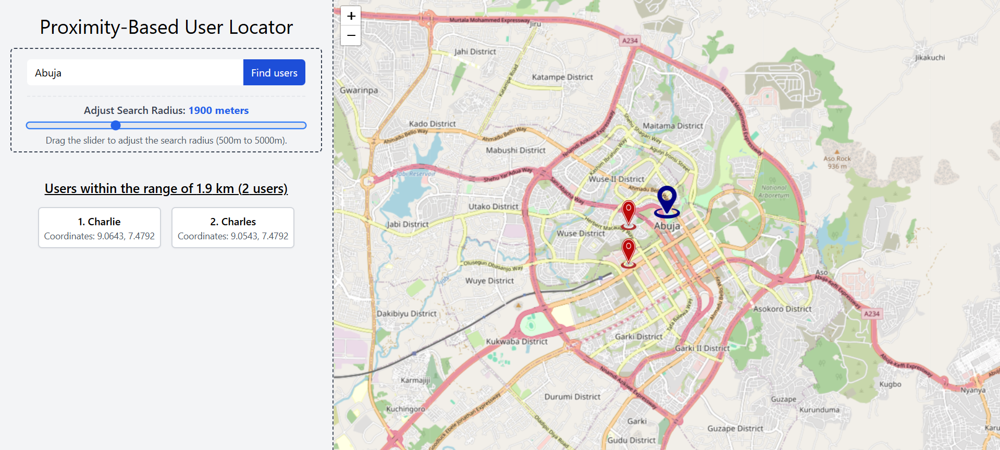
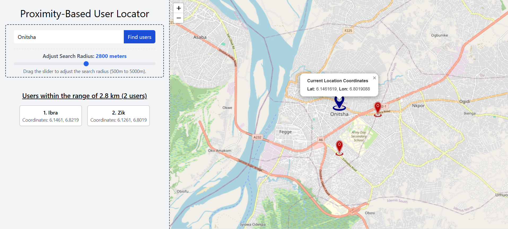
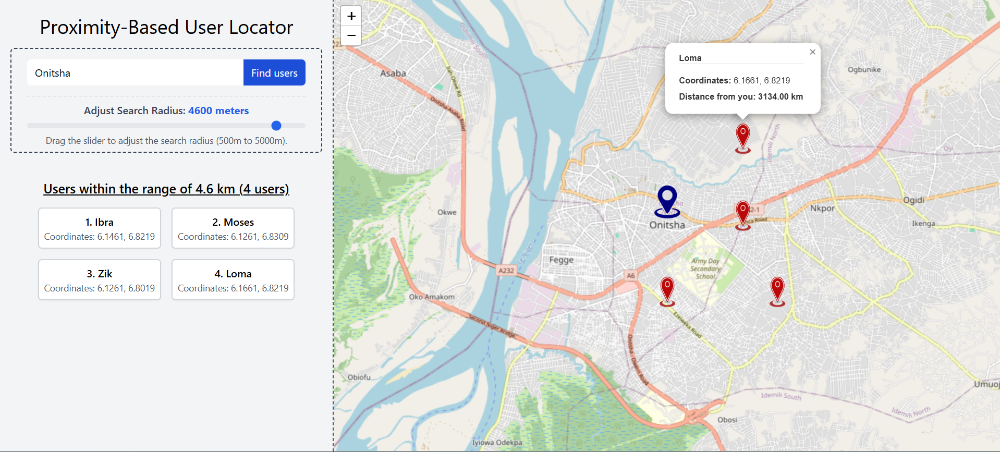

Project Info:
This is a geolocation service application that connects to the OpenCage API service to get information about the your address (inputable) and the people you are trying to connect to or that you are looking for. This makes use of latitude and longitude of each address to get information about the locations and their respective relationships with your address in terms of proximity. It uses toggle functionality to toggle the visibility radius for each address, so as to get users within the radius.
This app is fully responsive and very interactive. Made for easy and smooth usage.